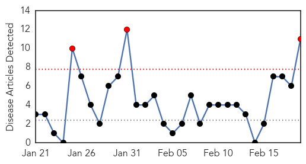
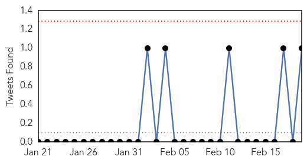
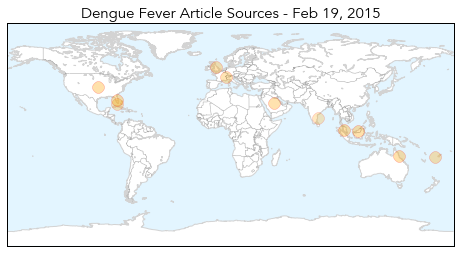

Dengue Fever
30-Day Web Trend
3 alerts, 0 warnings

30-Day Twitter Trend
0 alerts, 0 warnings

Article Locations
Article Confidences
Top Articles:
- 0.997
- Fighting to break the dengue cycle - Nation
- 0.993
- Which ‘Neglected’ Illnesses And Infections Top WHO’s List?
- 0.993
- 86 people struck down with crippling Ross River virus
- 0.986
- Fighting to break the dengue cycle, Others news, Health News, AsiaOne YourHealth
- 0.982
- Mosquito Viruses Are a Biting Concern for Snowbirds
- 0.947
- Cong. Lilia Nuño lauds city health execs for anti-dengue drive success
- 0.914
- Climate change could increase the spread of tropical diseases
- 0.907
- FBC News
- 0.898
- WHO Urges Billions to Fight Neglected Tropical Diseases — Naharnet
- 0.825
- Growing mosquito threat calls for mutant measures
- 0.746
- Mosquito threat persists, yet no entomologists
Top Tweets:
- 0.680
- Flavivirus news: Paper Test Quickly Detects Ebola Dengue and Yellow Fever - Scientific America... http://t.co/6Par1byJgN pathogenposse
Swine Flu
30-Day Web Trend
21 alerts, 3 warnings

30-Day Twitter Trend
0 alerts, 0 warnings

Article Locations

Article Confidences

Top Articles:
- 1.000
- India steps up fight against swine flu amid worst outbreak in years
- 1.000
- Swine flu in India: Swine flu kills 90, 1052 people tested positive in Madhya Pradesh
- 1.000
- Swine Flu: Five myths and cautions if you are infected
- 1.000
- Death toll in swine flu climbs to 812 in India: All you need to know about the deadly virus
- 0.999
- Swine flu continues to spread in India as death toll reaches 663
- 0.999
- Swine flu cases in India cross 11,000 mark; toll 703
- 0.999
- Health authorities ignored swine flu alert: DAK
- 0.999
- Swine flu death toll at 663 as over 10,000 people affected across India
- 0.999
- Over 650 dead due to swine flu, at least 10,000 test positive
- 0.999
- Revealed: Delhi hospitals 'risking public health' as patients share beds and ALL suspected flu cases are packed into one room
- 0.999
- SWINE FLU LOOMS LARGE OVER CITY
- 0.999
- Hundreds die of swine flu in India, spreads to J&K
- 0.999
- Delhi swings into action as cases of swine flu rise : India, News
- 0.999
- Mamata shocker: Swine flu mostly happens from mosquito bites : East, News
- 0.999
- Parents queue up for anti-H1N1 shots for children
- 0.998
- Swine flu claims 703 lives; PM directs proper treatment for patients
- 0.998
- Swine flu scare: Delhi Govt issues helpline numbers
- 0.998
- No Didi, it is not possible for a mosquito to cause swine flu
- 0.998
- Government monitoring swine flu cases, test rates halved in Delhi
- 0.998
- In Swine Flu-Hit Gujarat, Doctors Struggle as Hospitals are Swamped with Patients
- 0.998
- Government monitoring swine flu cases, test rates halved in Delhi
- 0.998
- Swine flu deaths: Congress accuses Govt. of being 'insensitive'
- 0.998
- Swine flu outbreak: Blame govt's shamefully low public health expenditure
- 0.998
- Government monitoring swine flu cases, test rates halved in Delhi
- 0.998
- Swine flu-struck DM referred to Delhi
- 0.997
- Swine flu deaths: Congress accuses Govt. of being 'insensitive'
- 0.997
- Swine flu outbreak: Govt denies medicine shortage, Delhi caps test rates at Rs 4,500
- 0.997
- Swine flu: 40 on ventilator, but many recover
- 0.997
- Swine flu deaths soar to 703, number of cases cross 11,000; Delhi govt issues helpline numbers
- 0.996
- Swine flu in India: 39 deaths this year in Indore
- 0.996
- SMHS doctors’ body concerned over outbreak, blame authorities
- 0.996
- 8 people die everyday due to swine-flu: Rajasthan govt
- 0.996
- State fixes swine flu test charges at Rs 2,500
- 0.996
- 40 more chemists get licence to sell swine flu drug Tamiflu
- 0.995
- Swine Flu H1N1: Two more swine flu cases in Himachal, death toll two
- 0.994
- Govt fixes rates of swine flu test at Rs 4,500
- 0.994
- Mizoram reports first case of swine flu, was in Delhi for a while
- 0.994
- No swine flu in Tripura, girl tests positive in Nagaland
- 0.993
- Swine flu test charges fixed at Rs. 4,500
- 0.993
- 40 more deaths due to swine flu; cases cross 11,000 mark
- 0.993
- Swine flu claims 9 more lives in Guj as toll rises to 176
- 0.993
- Additional ward in Nashik civil hospital to treat suspects
- 0.992
- No swine flu in Tripura, girl tests positive in Nagaland
- 0.991
- No swine flu in Tripura, girl tests positive in Nagaland
- 0.991
- Kashmir policeman dies of suspected swine flu, 84 cases confirmed
- 0.991
- Swine flu in India: Jammu SP dies of breathing disorder; swine flu suspected
- 0.991
- Chemists selling masks at high prices over swine flu scare
- 0.991
- Swine flu strikes Nagaland
- 0.991
- Assam ready to face any outbreak
- 0.991
- Mumbai has just 36 beds for swine flu patients
Showing top 50 articles...
Top Tweets:
-
No tweets found for Feb 19, 2015